CÔNG CỤ AI TỰ ĐỘNG CẮT DỰNG VIDEO (MFX V3.2 & MOTION 60FPS) — TRẢ PHẦN VIỆC CƠ HỌC CHO MÁY, GIỮ TRỌN CẢM XÚC KHI ĐỨNG TRƯỚC ỐNG KÍNH
Trang tài liệu thực hành và trình chiếu các sản phẩm đã dựng thực tế bằng bộ công cụ AI của anh Việt. Toàn bộ ví dụ, video mẫu và kịch bản trên trang này được lấy trực tiếp từ 309 hồ sơ học viên thật thuộc 16 nhóm ngành hàng trong khóa học — để bạn nhìn thấy ngay bài nói công việc của mình khi đưa vào máy sẽ ra thành phẩm như thế nào.
PHẦN 1: LOGIC CỐT LÕI & ĐỐI CHIẾU 4 PHIÊN BẢN VẬN HÀNH
Khi anh chị chủ tiệm, bác sĩ, dược sĩ hay kiến trúc sư tự quay một bài nói chuyên môn dài 2 đến 3 phút, phần làm mình nản nhất không phải lúc bấm máy nói, mà là 4 tiếng buổi tối ngồi cắt từng nhịp thở, căn lại khung mặt bị lệch sau mỗi vết cắt, gõ từng dòng chữ và đi mò tìm từng tấm ảnh minh họa. Hệ thống MFX V3.2 được xây dựng để tự động hóa trọn vẹn 6 khâu cơ học đó bằng toán học chính xác.
1.0. Bậc thang 3 cấp độ sử dụng (Cách hiểu nhanh trong 30 giây như chụp ảnh trên iPhone)
mfx.fedu.vn)mfx.fedu.vn trên iPhone là nhận ngay file .mp4 hoàn chỉnh sau 2 phút.
--patch & Gói CapCut)--patch là máy cập nhật ngay trong vài giây, hoặc xuất gói nền trong suốt đưa sang CapCut.
.TSX.TSX có sẵn bảng biến Tweaks.
1.1. Sáu cơ chế kỹ thuật tự động của MFX V3.2
cv2.inpaint và khóa cứng tâm mặt về đúng tọa độ (cx=592.8, cy=915.0).
1.1s–1.8s, luân phiên đổi góc 1.00x → Punch-in Zoom 1.08x → Hard-cut 1.00x → #V Cảnh Trám Fullscreen.
start_y_ratio=0.46, đặt Icon phát sáng tại Y=1320, dòng chính FD Integral tại Y=1388 và dòng phụ FD Tiempos Italic tại Y=1472.
+2.20s để chèn thẻ màn đen #B mà không cắt mất một chữ nào của người nói. Nếu video ngắn dưới 12s, máy tự lược bỏ #B để giữ nhịp nhanh.
1080x1920 chuyển động kenBurnsPan 1.00x→1.09x kèm chớp sáng 0.09s, hoặc đóng khung 3D Bento Spec Card hiển thị 3 ô thông số kỹ thuật sắc nét.
whoosh + pop hoặc shutter + sub_bass) ở mức âm lượng rất khẽ ~10% (volume=0.09). Tắt hoàn toàn hiệu ứng bóp giọng để giữ nguyên tiếng nói mộc mạc.
1.2. Bảng đối chiếu chi tiết 4 phiên bản vận hành (Bản Đầy Đủ vs. Bản V3 Sửa Nhanh vs. Gemini Web vs. Motion 60fps)
| Phiên bản | Công cụ & Đầu vào tốt nhất | Cách hoạt động & Điểm mạnh thực tế | Khi nào nên dùng? |
|---|---|---|---|
1. Bản Đầy Đủ (Full 2-Bước Đạo Diễn)v3_pro_director.py |
• Đầu vào: File .mp4 thô (dài 20s đến 5 phút, nhiều vết cắt).• Chạy trên máy Mac/PC qua Antigravity. |
• Bước 1 (--video): Quét toàn bộ video, nhận diện giọng nói, sửa lỗi chính tả, lên kịch bản chia nhịp #T, #B, #V và xuất bộ ảnh Frame Mockup .png để xem trước từng cảnh.• Bước 2 ( --render): Khóa tâm mặt quang học, tự vẽ ảnh B-Roll 9:16 và kết xuất file .mp4 hoàn chỉnh. |
Khi dựng video chia sẻ chuyên môn dài (như bài 3 phút 26 giây gồm 55 cú máy của Vy) hoặc video sản phẩm cần xóa chữ thừa và kiểm duyệt kỹ từng khung hình trước khi xuất. |
2. Bản V3 Sửa Nhanh (Delta Patcher & CapCut Pack)--patch / --export-alpha |
• Đầu vào: File kế hoạch .v3_plan.json + câu lệnh sửa 1 dòng.• Hoặc xuất gói kéo thả sang CapCut. |
• Sửa tức thì không cần chạy lại từ đầu: Đổi nội dung chữ, đổi màu chữ, thay riêng 1 tấm ảnh B-Roll (hot-swap #V), thêm/xóa màn đen #B chỉ trong vài giây.• Xuất gói CapCut: Xuất thư mục ảnh .PNG nền trong suốt 1080x1920 và file ProRes 4444 .mov kèm sẵn âm thanh để kéo vào CapCut chỉnh thêm bằng tay. |
Khi đã có bản dựng nháp và muốn sửa nhanh 1–2 chữ, đổi ảnh minh họa khác, hoặc khi đội ngũ nhân sự muốn lấy lớp chữ phát sáng đem sang CapCut ghép thêm cảnh quay tại tiệm. |
3. Bản Gemini Web & iPhone Studio (1 Lần Dán Cho Học Viên)mfx_v3_universal_engine.py |
• Đầu vào: Gói edit-video-v3-skill.zip gắn trên Gemini Web + Video .mp4.• Chạy trên cả Windows, Mac và iPhone ( mfx.html). |
• Tải video lên Gemini Web → AI tự xem video và trả về 1 Khung Copy Hợp Nhất. • Dán vào máy tính (Windows/Mac): Tự tải Font + SFX + FFmpeg từ Cloudflare R2 CDN, tự tìm file video trong máy (kể cả khi bị đổi tên thành video.mp4) và xuất thẳng thành phẩm.• Trên iPhone: Dán mã vào mfx.fedu.vn để xuất .mp4 lưu thẳng vào Cuộn Camera. |
Dành cho học viên khóa Offline: Không rành kỹ thuật, dùng máy Windows mới tinh hoặc dùng điện thoại iPhone vẫn tự làm được video hoàn chỉnh ngay tại bàn học. |
4. Bản Motion Graphic 60fps (.TSX Studio)Skill motion V2.1 |
• Đầu vào: File .mp4 / .wav + 4 Khuôn gốc .TSX có bảng biến Tweaks.• Chạy qua Remotion 60fps. |
• Chưng cất mỗi nhịp nói thành 2–5 từ khóa cô đọng kèm hiệu ứng chuyển động vật lý 60 khung hình/giây.• Có sẵn 4 khuôn thiết kế gốc: Ultra-Clean V3, Claude Risograph Hybrid, 3D Bento Gold 9:16 và MasterClass Acid-Lime Brutalist. • Ghép âm thanh 4 lớp từ kho 8.902 file sfx.fedu.vn. |
Khi làm video mở đầu thu hút sự chú ý cao, giải thích cơ chế phức tạp bằng đồ họa chuyển động 60fps hoặc kết hợp đan xen giữa mặt người nói và bảng biểu 3D. |
1.3. Bàn Copy Câu Lệnh & Đầu Vào Chuẩn Theo Từng Bậc (Bấm 1 Lần Để Copy)
Dưới đây là các câu lệnh chuẩn xác theo đúng tham số của hệ thống. Bạn chỉ cần bấm nút Copy ở góc phải từng hộp đen:
Dựng video này chuẩn V3 cho tôi, tự chia vế câu 1.5s, khóa tâm mặt và chọn các từ khóa đắt nhất để chèn ảnh B-Roll minh họa.
# 1. Sửa nhanh nội dung chữ, vị trí [lower], kiểu chuyển động [MG-T02] và âm thanh của nhịp #T2: python3 ~/.gemini/config/skills/auto-edit-video/scripts/v3_pro_director.py \ --plan-file "./edit_plan/video_goc.v3_plan.json" \ --patch '#T2: "SOI TẬN ỐC ĐÍT | Cam kết nguyên bản" [lower] [MG-T02] [sfx:laser_strike]' # 2. Xóa nhanh thẻ màn đen #B1 nếu muốn giữ mạch nói liền: python3 ~/.gemini/config/skills/auto-edit-video/scripts/v3_pro_director.py \ --plan-file "./edit_plan/video_goc.v3_plan.json" \ --patch 'delete #B1' # 3. Xuất gói lớp phủ nền trong suốt (ProRes 4444 .mov & PNG) để kéo thả vào CapCut: python3 ~/.gemini/config/skills/auto-edit-video/scripts/v3_pro_director.py \ --plan-file "./edit_plan/video_goc.v3_plan.json" \ --export-alpha
# Bước 1: Phân tích video, chia nhịp vế câu và xuất bộ ảnh Frame Mockup để kiểm duyệt python3 ~/.gemini/config/skills/auto-edit-video/scripts/v3_pro_director.py \ --video "/duong/dan/video_goc.mp4" \ --output-dir "./edit_plan" # Bước 2: Sau khi ưng ý Mockup, khóa tâm mặt quang học + sinh B-Roll + kết xuất MP4 hoàn chỉnh python3 ~/.gemini/config/skills/auto-edit-video/scripts/v3_pro_director.py \ --plan-file "./edit_plan/video_goc.v3_plan.json" \ --render --engine ffmpeg
⚙️ Mở rộng: Lệnh 1 dòng tự tải bộ cài từ Cloud R2 cho máy Windows / Mac mới tinh
python -c "import urllib.request,os,subprocess,sys; os.makedirs('.mfx_cache',exist_ok=True); p='.mfx_cache/mfx_v3_universal_engine.py'; req=urllib.request.Request('https://pub-2c3c54c8f9334a1f8673abc9ecdbb9e1.r2.dev/mfx_v3_resources/mfx_v3_universal_engine.py',headers={'User-Agent':'Mozilla/5.0'}); open(p,'wb').write(urllib.request.urlopen(req).read()); subprocess.run([sys.executable,p,'--edl','edl_plan.json','--auto-broll'],check=True)"
PHẦN 2: SHOWCASE THÀNH PHẨM THỰC TẾ ĐÃ DỰNG THEO NGÀNH HÀNG HỌC VIÊN
Bấm chọn từng nhóm ngành bên dưới để lọc nhanh các dự án đã làm thực tế, xem trực tiếp video thành phẩm, bàn đối chiếu trước/sau khi khóa tâm mặt và bộ khung hình chi tiết (bấm vào bất kỳ tấm ảnh nào để phóng to toàn màn hình):
Case 1 — Ngành Đào tạo, Kinh doanh & Review Sách Tài chính (Học viên Vy — Matching Vietnam / Hoàng Vy Finance)
Bài toán thực tế của học viên: Vy quay một bài phân tích chuyên môn dài 3 phút 26 giây (206.5s) gồm 55 cú máy cắt nối nói về lý thuyết "Nhiệm vụ cần hoàn thành — Jobs To Be Done" (case study Apple, Steve Jobs, Henry Ford, máy khoan, mì Hảo Hảo vs Omachi, tàu cao tốc Đài Loan). Trong bản quay gốc có 16 cú máy bị lật gương ngang, 3 mức phóng khung hình lệch nhau khiến mặt người nói nhảy qua lại liên tục, cộng thêm 2 vết bẩn trên tường.
(592.8, 915.0), tách 8 nhịp vế câu #T1→#T8, đổi màu chữ theo ngữ cảnh (Kem vàng, Vàng Gold, Xanh Cyan, Đỏ nhấn) và đan xen ảnh minh họa đúng từ khóa Steve Jobs, Henry Ford, chiếc xe ngựa.
--auto-broll mật độ cao: Cứ mỗi vế câu 2.2 giây, máy tự động bung một tấm ảnh 9:16 (Apple, Steve Jobs, Henry Ford khảo sát, Xe ngựa chạy nhanh, Ô tô Ford Model T) với chuyển động kenBurnsPan mượt mà.
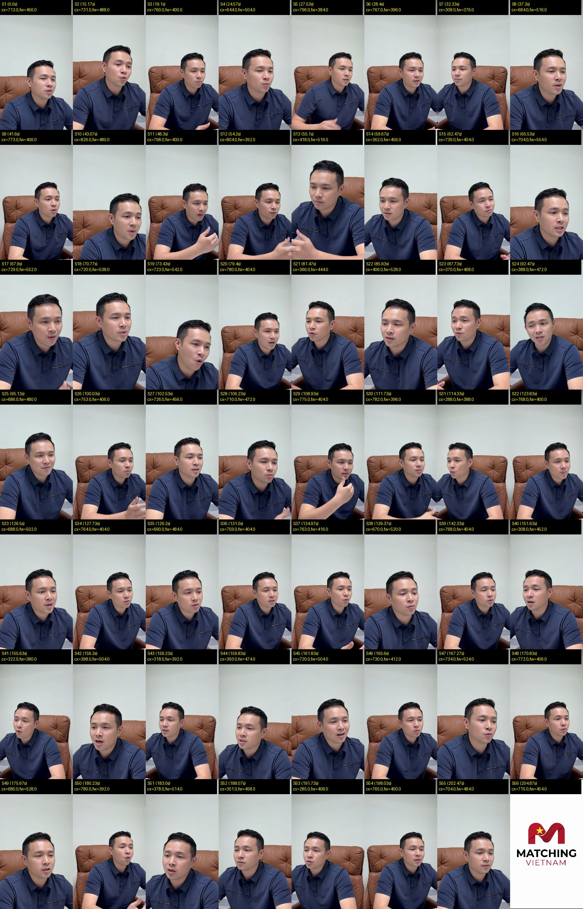
🔍 Bấm phóng to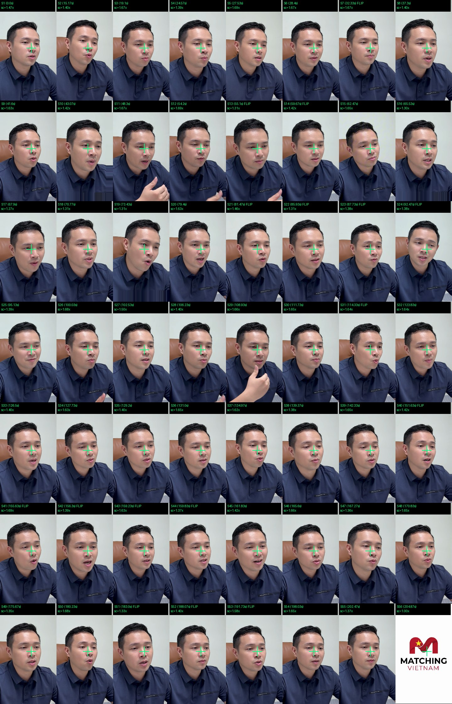
🔍 Bấm phóng to📸 Lưới 6 khung hình trích từ 50 nhịp trong bản dài 3 phút 26 giây của Vy (Chữ trần 2 dòng + Icon phát sáng + Cảnh trám AI):
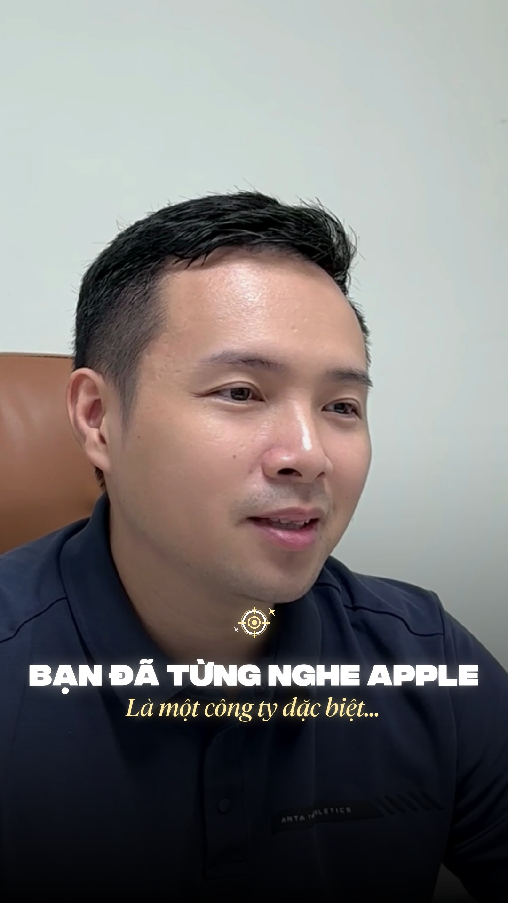
🔍 Phóng toSTYLE-32 mở bài Apple.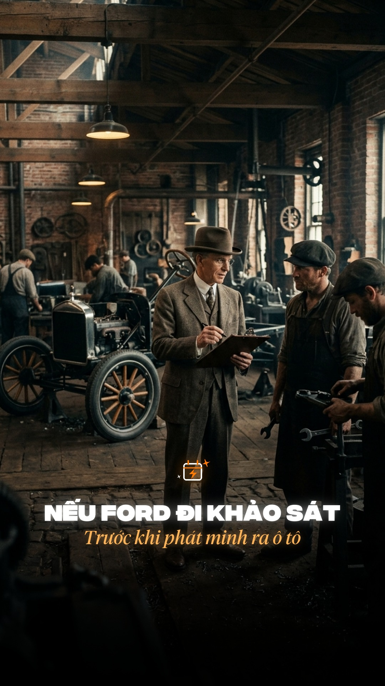
🔍 Phóng to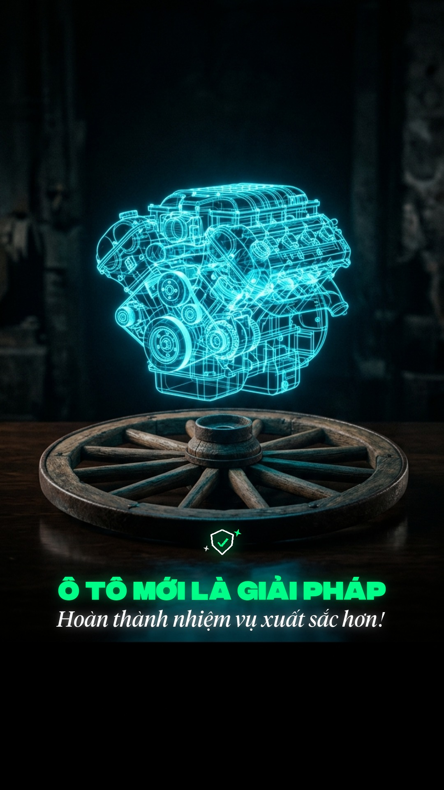
🔍 Phóng toZoom 1.08x nhấn mạnh bài học Đường sắt cao tốc Đài Loan.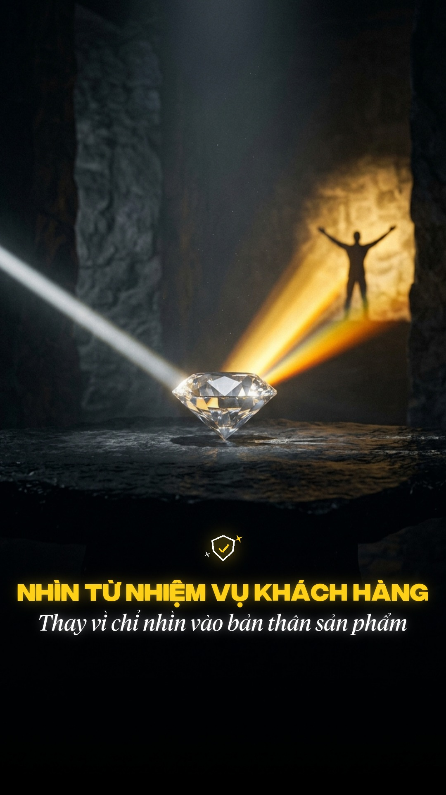
🔍 Phóng toCase 2 — Ngành Bán lẻ Gia dụng, Điện máy & Affiliate TikTok Shop (Máy cọ rửa xoay 360° chống nước IPX7)
Bài toán thực tế của học viên nhóm Bán lẻ & Cơ điện (78/309 học viên): Có video quay cảnh thử máy thực tế nhưng bị dính logo cũ hoặc chữ thừa trên khung hình, thiếu bảng thông số kỹ thuật trực quan và thiếu thẻ so sánh Trước/Sau để khách ra quyết định mua ngay.
Optical Crop & Telea Inpaint, chèn màn đen #B1 (+2.2s) và đóng khung 3D Bento kèm bảng thông số.
- #T1 (0.0s–3.1s):
ĐÁNH BAY MỠ CHÁY— Chỉ 3 giây không tốn một giọt mồ hôi. - #T2 (3.1s–5.8s):
SẠCH SÂU KHE HÚT MÙI— Nơi giẻ lau thường chịu thua. - #T3 (5.8s–8.6s):
CÂN MỌI GÓC KHUẤT— Chống nước IPX7 toàn thân máy. - #B1 (8.6s–10.8s): Màn đen Split & Ripple
+2.2s: 1 MÁY • 5 ĐẦU CỌ THAY THẾ. - #T4 + #V1 (10.8s–14.2s): Thẻ Bento 3-Grid Spec Card (Mô-men xoắn lớn • Pin 120 phút • Sạc nhanh Type-C).
- #T5 & #T6 (14.2s–19.4s): Đánh trắng đế giày Sneaker & Thay đầu cọ trong 1 giây.
- #T7 + #V2 (19.4s–22.73s): Thẻ Before/After Split-Screen (Trước khi cọ vs. Sau 3 giây cọ) + Kêu gọi bấm giỏ hàng.
📸 Trọn bộ 8 Frame Mockup thực tế của dự án dropship1.mp4 (Đã làm sạch khung hình + Đóng khung Bento + Thẻ Thông Số #V1 & Trước/Sau #V2):
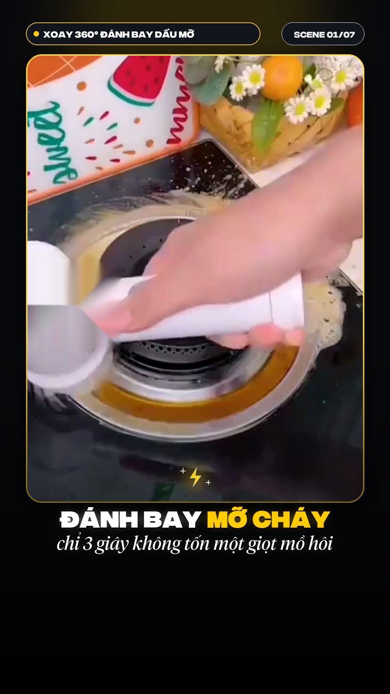
🔍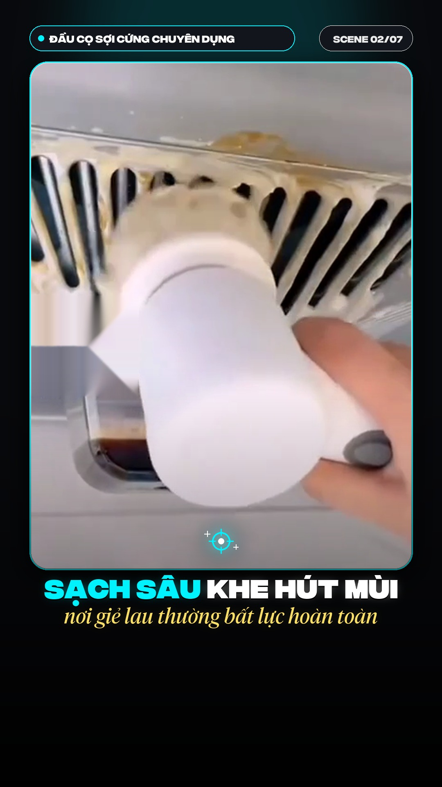
🔍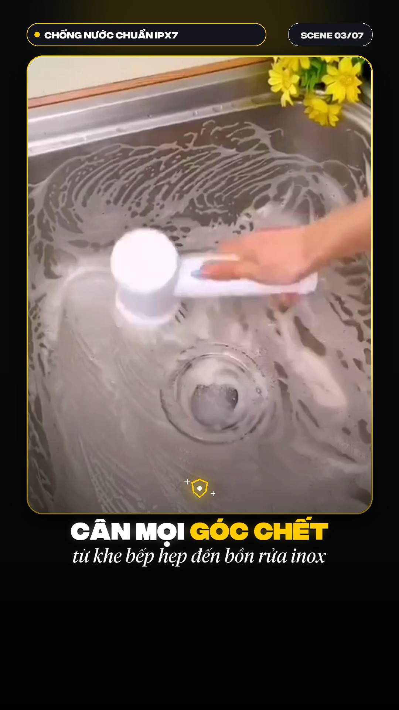
🔍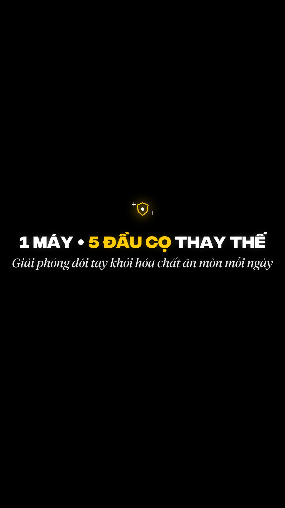
🔍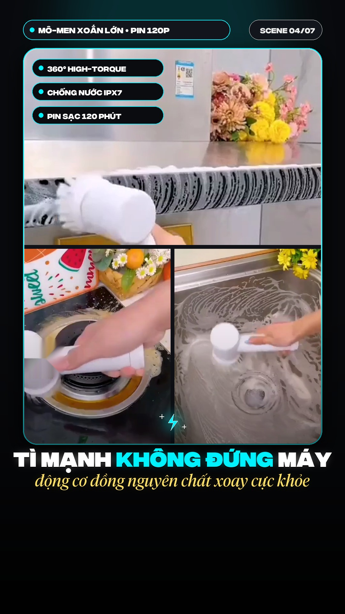
🔍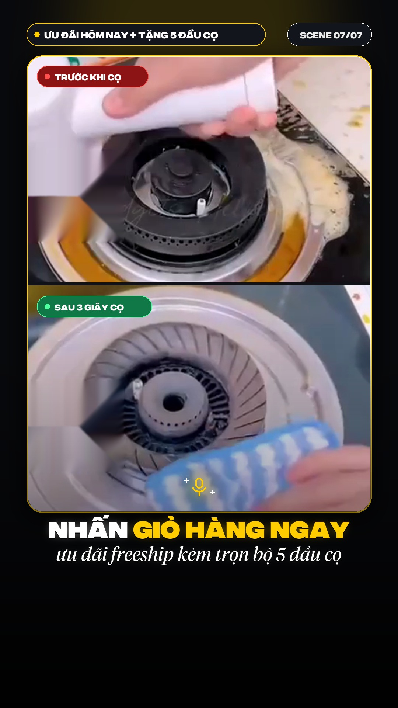
🔍Case 3 — Ngành Đào tạo Thực chiến & Xây kênh (Demo qcVD1 & Luồng Gemini Web + iPhone Studio)
5.04s được máy tự động tách ở giây 2.5 để chèn màn đen #B1 (+2.20s) nâng tổng thời lượng lên 7.24s mà không mất một âm tiết nào, cuối video tự đè cảnh B-Roll anh Việt cầm máy quay tại lớp học.
EDL JSON 6 nhịp liên hoàn (#T1→#T6+#V1) và bấm kết xuất tự động không cần chỉnh tay.
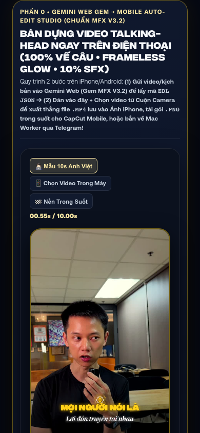
🔍 Phóng tomfx.fedu.vn. Học viên chọn video từ Cuộn Camera iPhone + dán mã từ Gemini là xuất thẳng file .MP4 về máy.
Case 4 — Ngành Thương hiệu cá nhân & Lifestyle Quay Bằng DJI Osmo Pocket 4 (Tự giải màu 10-Bit D-Log & Lọc điểm rơi cảm xúc)
Bài toán thực tế: Nhiều học viên đầu tư máy quay DJI Osmo Pocket 3 / Pocket 4 quay ở chế độ màu phẳng 10-bit D-Log nhưng khi đưa vào điện thoại thì màu bị xám xịt, hoặc khi áp sẵn file màu (LUT .cube) của hãng thì vùng đèn trần nhà bị cháy trắng xóa. Hơn nữa, trong một cú máy dài 10 giây thường bị lẫn 3–4 giây đầu/giữa lúc người quay đang cúi nhìn màn hình chỉnh máy.
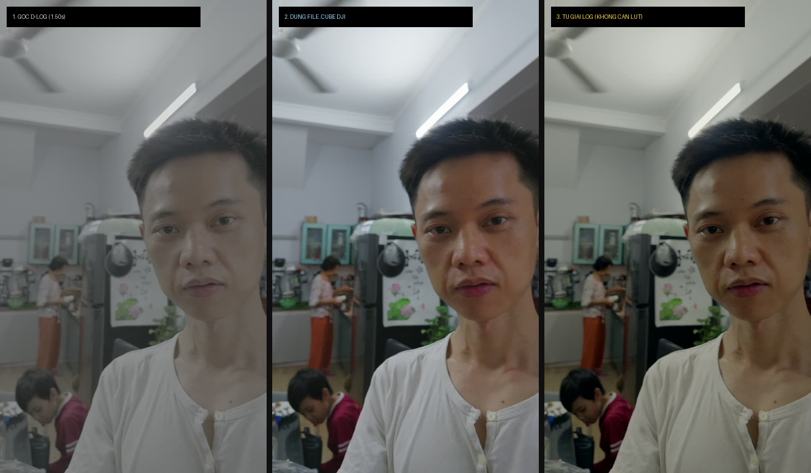
🔍 Bấm phóng to.cube bên ngoài: Thuật toán tự đọc thông số cân bằng trắng trong file MP4 để tái tạo màu da ấm tự nhiên mà vùng đèn trên trần nhà vẫn giữ nguyên chi tiết, không bị gắt như cột giữa (LUT hãng).
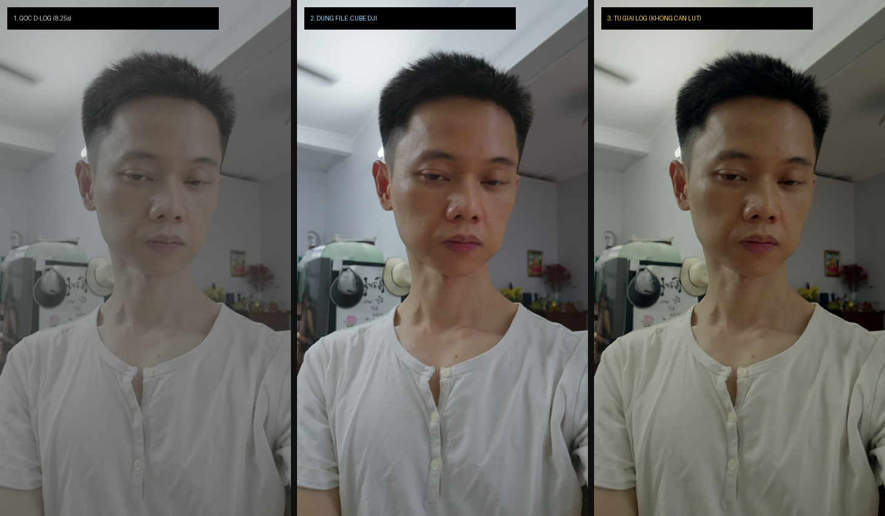
🔍 Bấm phóng to9.79s, máy tự loại bỏ đoạn 2.9s–6.6s (lúc chớp mắt và chỉnh tay cầm), chỉ ghép Cut 1 (0.5s–2.9s: Xoay máy khóa ánh mắt giữa đám đông) và Cut 2 (6.6s–9.1s: Trầm tư ngẩng nhìn) thành bản 4.90s hoàn chỉnh.
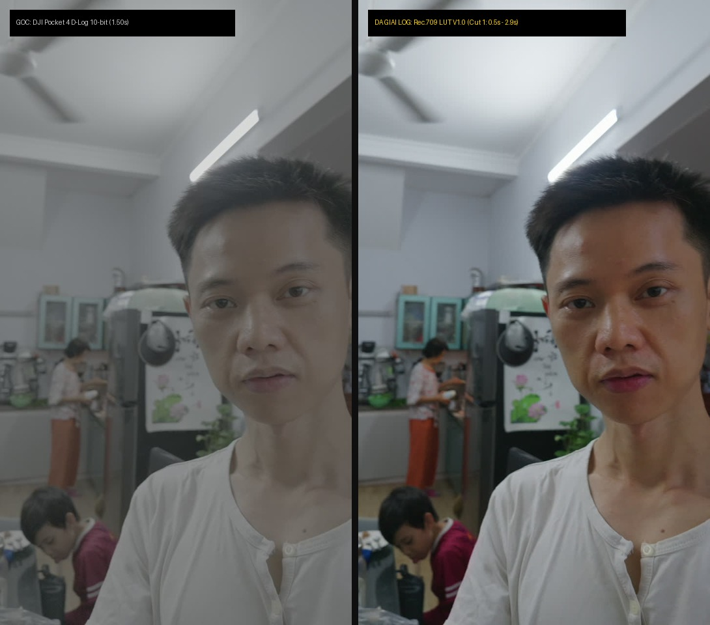
🔍 Phóng to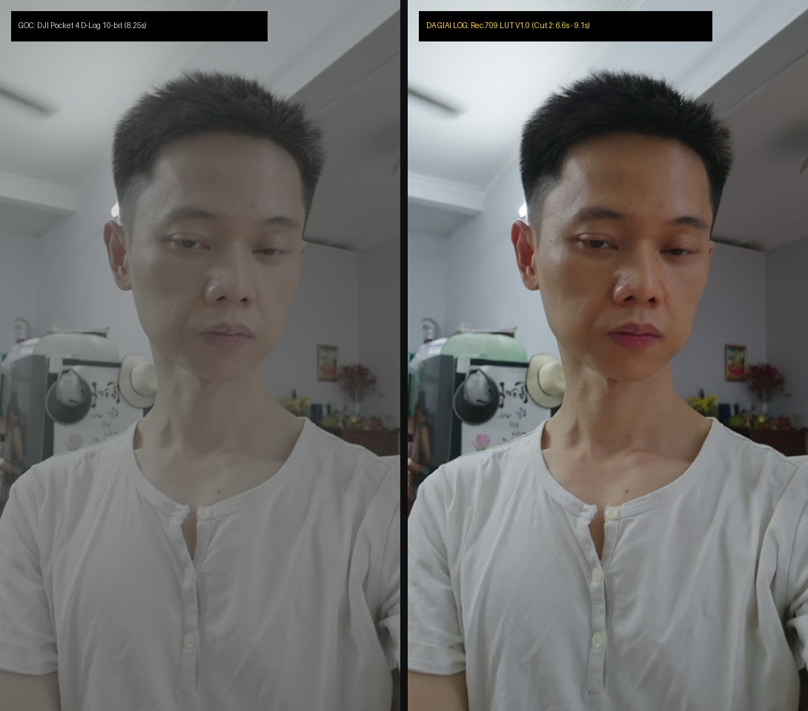
🔍 Phóng to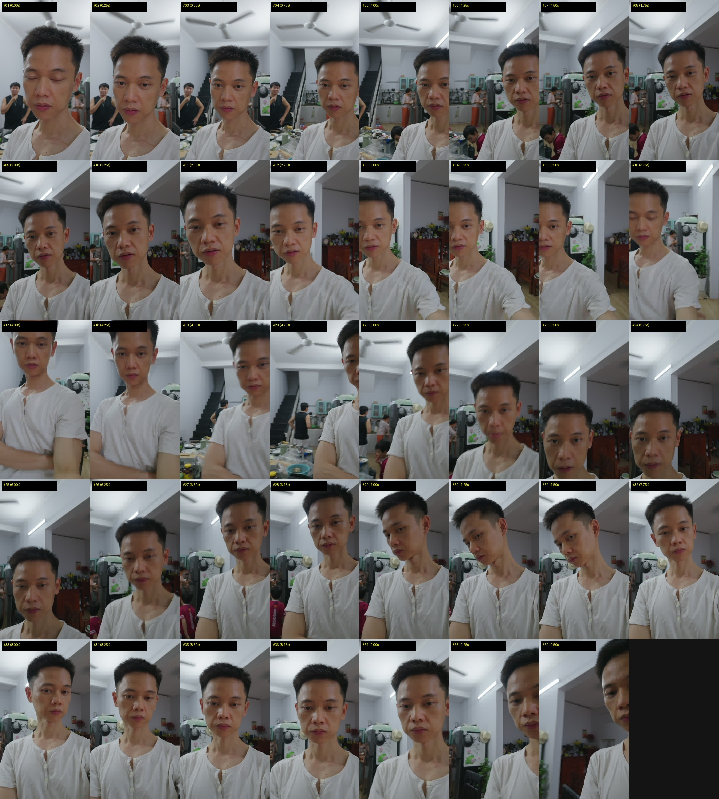
🔍 Phóng to2.9s–6.6s cần loại bỏ.Case 5 — Hệ Sinh Thái 4 Khuôn Thiết Kế Gốc Motion Graphic 60fps (Motion 01 → Motion 05)
Bên cạnh chế độ dựng video người nói MFX V3.2, hệ thống còn có 4 Khuôn Thiết Kế Gốc .TSX chạy ở chuẩn 60 khung hình/giây (tổng cộng 13 video thành phẩm đã đóng gói tại Trung tâm Motion 00). Bạn chỉ cần thay nội dung chữ và màu sắc thương hiệu trong bảng biến Tweaks ở đầu file là xuất được ngay:
#F3ECDD), màu cam đất (#E2683A), xanh cổ vịt (#1E5A64) với các nhịp cắt cận cảnh người nói — cực hợp cho ngành Giáo dục, Sách, Tư vấn Doanh nghiệp.
#07090E + #FACC15), có sẵn cả bản dài 47 giây (xem bản 47s tại đây) và file .webm nền trong suốt để đè trực tiếp lên video quay thật trong CapCut.
#E0EE70, Đen sâu #060606 và Đỏ cờ #C8232C — tạo điểm dừng mắt cực mạnh trong 3 giây đầu.
Case 6 — Các Ngành Hàng Khác Đã Sửa Kịch Bản & Dựng Thực Hành Trong Kho Học Viên (stu.fedu.vn)
| Học viên & Mã hồ sơ | Ngành hàng & Sản phẩm | Chỗ vướng ở bản quay cũ | Cách xử lý bằng AI Edit & Cấu trúc nhịp |
|---|---|---|---|
DS. Đức Viễn — Nhà Thuốc Cát Tườngcat_tuong_offline2 |
Y Dược & Gia dụng vùng cao | Bản quay ngoài sân dài 49s chỉ có 1 góc máy tĩnh, nhiều nhịp nghỉ lấy hơi làm giảm độ cuốn hút của câu chuyện đời thường. |
Cắt gọn từ 49s xuống bản hoàn chỉnh 35s, giữ nguyên tiếng bước chân tự nhiên ngoài sân và đan xen các cảnh trám cận cảnh cử chỉ tay + chữ nhấn từng câu. |
Chị Đặng Hường — Đặng Hường Y Quánang_huong |
Spa Đông Y, Bấm huyệt cổ vai gáy, Trị nám | Quay video nhép miệng giải trí thì có 18K lượt xem nhưng khách thật không đặt lịch; khi quay video chuyên môn thì ngồi bàn nói khô khan tụt còn 292 lượt xem. | Chuyển sang cấu trúc Chấm bút trực tiếp lên đốt sống lưng/mô hình + Khoanh sáng vùng đau MG-T03 + Trám lát cắt 3D giải phẫu cơ/huyệt (đã lập báo cáo mổ xẻ 12 video + 5 kịch bản mẫu). |
Chị Minh Tâm — Hàn Việt Beauty Spa Quy Nhơnminh_tam_spa_quy_nhon |
Điều trị nám & Đào tạo học viên Spa 8 năm | Quay cảnh làm mặt cho khách tại giường suốt 63s đều đều một nhịp, không có điểm nhấn phác đồ hay bảng đối chiếu nền da. |
Thiết lập 3 góc máy cố định tại giường kết hợp chèn chữ trần 2 dòng ghi rõ phác đồ điều trị và thẻ đối chiếu nền da Trước/Sau ở giây thứ 4. |
Anh Lâm Vũ — Legacy Vietnamlam_vu_offline2 |
Chuyển giao máy thẩm mỹ Nitro Fractional B2B cho chủ Spa | Thiết bị công nghệ cao giá trị lớn, nếu chỉ quay cảnh vỏ máy bên ngoài thì chủ Spa không hiểu cơ chế tác động xuống tầng da. | Kết hợp cảnh quay chuyển giao máy tại cơ sở với Cảnh trám mô phỏng tia năng lượng vi điểm + Thẻ Bento thông số đầu máy. |
Chị Hà Bảo Châu — Hồng Hà Landha_bao_chau_offline2 |
Bất động sản (Căn hộ cao cấp Greenera Southmark) | Đứng tại công trường nhiều tiếng ồn, nói một mạch thông số tổng quan dễ giống tờ rơi giới thiệu dự án. | Khóa tâm mặt chống rung khi vừa đi vừa nói tại công trường, đè cảnh thực tế tiến độ đổ sàn và bảng thông số vị trí/kết nối vùng theo từng nhịp 2 giây. |
Anh Nguyễn Quốc Khoa — Banker Review Nội Thấtnguyen_quoc_khoa |
Thiết kế & Thi công Nội thất (Đá bếp Vicostone, Gỗ An Cường) | Video khiêng tấm đá bếp thật đạt 20.6K lượt xem, nhưng video ngồi ghế xoay nói chay về thông số cửa cao 2m20 tụt xuống 643 lượt xem. |
Bắt buộc dùng AI Edit đè cảnh công trình thật + Bút dạ quang vàng (MG-T05) gióng thẳng đường thước lên thông số 2m20 và cạnh đá vát số 16 ngay khi miệng vừa đọc con số. |
Chị Yến — Tâng Xinh (tang_xinh_chi_yen) & Diễn giả Phạm Bá Nghĩa (pham_ba_nghia) |
Đào tạo Hôn nhân Gia đình (86K follow) & Diễn giả Z1000 | Bài nói dài nhiều ý, cần giữ nhịp cảm xúc liền mạch mà không bị quên ý hay nhảy khung hình. | Chia 43 nhịp nhắc chữ theo từng vế câu, kết hợp cấu trúc 3 tầng Why – What – How (MG-T04) và cắt bỏ toàn bộ khoảng nghỉ lấy hơi thừa. |
PHẦN 3: 10 KỊCH BẢN MỚI ĐO NI ĐÓNG GIÀY TỪ 309 HỒ SƠ HỌC VIÊN THẬT
Để học viên ở bất kỳ ngành nào bước vào lớp Offline cũng thấy ngay: "Ồ, đúng cái nghề khô khan của mình mà đưa vào công cụ này lại ra được video cuốn hút và ra đơn thật!" — dưới đây là 10 kịch bản mẫu đại diện cho hơn 92% học viên trong students_master.json. Mỗi kịch bản đều gắn sẵn Đạo cụ cầm tay + Hành động tay 2 giây + Con số đo lường cụ thể để máy tự động bung cảnh trám và thẻ thông số đẹp nhất.
Dán thử 2–3 câu lời thoại của bạn vào ô dưới đây. Máy sẽ tự đếm các con số đo lường (mm, cm, m, V, %, dB, °C, µm, ngày, phút, triệu...) và đạo cụ vật lý để báo xem AI có đủ dữ liệu vẽ cảnh trám sắc nét hay chưa:
nguyet_store_hp, 50 Hai Bà Trưng, HP).• Chỗ vướng: Ngồi trước bàn nói 1 góc máy tĩnh, mở đầu bằng câu quen thuộc "Fan nhà Táo đâu rồi"; nói miệng cam kết máy nguyên bản nhưng thiếu cảnh rọi đèn vào ốc đít và bảng xanh 3uTools đè lên đúng lúc nói.
1.00x ↔ 1.08x, chữ STYLE-17 + Icon SHIELD_STAR.• #B1 (6.5s–8.7s): Màn đen Split & Ripple
+2.2s: "SOI TẬN ỐC ĐÍT • ĐỀN 1 TRIỆU NẾU LỖI".• #T4+#V1 & #T5+#V2 (8.7s–15.0s): Trám cận cảnh đèn rọi 2 con ốc đít chưa vặn + Khung
MG-V04 hiện bảng 3uTools Xanh 100 Điểm.
nguyen_quoc_khoa) & Chị Ngọc Khánh (ngoc_khanh_8366 — người ghi trong phiếu đăng ký: "cần dựng video tự động bằng AI").• Chỗ vướng: Khi ngồi ghế đọc thông số kỹ thuật (cửa
2m20, vát cạnh đá số 16) mà không có hình minh họa đè lên thì lượt xem tụt từ 20.600 xuống còn 643 lượt xem.
STYLE-32: "SAI LẦM 20 TRIỆU" / khi lắp chậu rửa bát âm bàn đá.• #T3+#V1 (4.8s–8.5s): Thẻ Before/After Split-Screen: Nửa trên là viền keo silicon mốc đen sau 6 tháng; nửa dưới là kỹ thuật hạ bậc âm toàn phần đá Vicostone sâu 3mm.
• #B1 (8.5s–10.7s): Thẻ 3 bước
MG-B03: 1. Hạ bậc đá 3mm • 2. Vát cạnh số 16 • 3. Nhựa Picomat chống nước.
ang_huong), Chị Minh Tâm Spa Quy Nhơn (minh_tam_spa_quy_nhon), Miu Miu — La Hues Clinic (miu_miu_spa), Linh Xu Spa (linh_xu_spa).• Chỗ vướng: Quay cảnh làm dịch vụ tại giường 60 giây tối và đều đều, thiếu hình giải phẫu tầng biểu bì/trung bì và thiếu vòng khoanh vùng nám.
MG-T03.• #T2–#T3 (2.8s–7.2s): Chữ
STYLE-05 (Đỏ/Trắng): "NGƯNG KEM LÀ NÁM ĐẬM LÊN?".• #B1 (7.2s–9.4s): Màn đen Split & Ripple: "SOI ĐÈN UV • PHỤC HỒI HÀNG RÀO BẢO VỆ DA".
• #T4+#V1 (9.4s–15.0s): Trám ảnh 3D lát cắt lớp sừng biểu bì
0.02mm và các đốm sắc tố dưới đèn UV.
vu_ha_hue_linh), Cô Nguyễn Kim Hạnh — Giảng viên ĐH (nguyen_kim_hanh), Chị Ngân Gia Huy — Safari Montessori (ngan_gia_huy).• Chỗ vướng: Đã mua Website bán khóa học nhưng thấy video tự quay ở nhà chưa đủ chỉn chu nên chưa dám đăng lên Web; hoặc quay video dài 6 phút mất 50s đứng trước phông bạt giới thiệu.
• #T1–#T3 (0.0s–6.5s): Chữ
STYLE-32 + Cấu trúc 3 tầng MG-T04.• #B1 (6.5s–8.7s): Sơ đồ lộ trình 3 bước
MG-B02.• #T4+#V1 & #V2 (8.7s–20.0s): Trám cảnh lật đồng hồ cát 15 phút + thẻ từ vựng A5 và cảnh 30 học sinh giơ tay tại lớp.
cat_tuong_offline2), Bạn Từ An — Men Mộc An (tu_an_men_moc_an, 85K follow), Chị Nguyễn Thị Bích Thủy — Dầu gội thảo dược Thiên Y Linh (nguyen_thi_bich_thuy_k1).• Chỗ vướng: Chỉ quay lặp đi lặp lại 1 kiểu múc/uống sản phẩm làm lượt xem chững lại, hoặc dễ vướng từ ngữ nhạy cảm ngành Y Dược trên nền tảng.
• #T2+#V1 (2.5s–6.5s): Trám cảnh đổ quả kha tử già ra mẹt tre phơi 4 nắng + Chữ
STYLE-04 tránh hoàn toàn từ nhạy cảm y tế.• #B1 (6.5s–8.7s): Bộ đếm số
MG-B04 nhảy lên "180 NGÀY Ủ CHUM SÀNH DƯỚI NẮNG GIÀ".• #T3+#V2 (8.7s–18.0s): Thẻ
MG-V01 nổi phản hồi thật của khách hàng + Dòng lưu ý trẻ dưới 1 tuổi.
ha_bao_chau_offline2), Minh Đức Land (minh_duc_land), Anh Minh Vương (minh_vuong — người ghi rõ: "Cần kỹ thuật quay làm nổi bật điểm mạnh của sổ đỏ").• Chỗ vướng: Ra đến đất thật là lúng túng không biết chuyển cảnh sao cho mượt, giơ cuốn sổ đỏ lên quay thì chữ nhỏ khó đọc.
STYLE-17: "ĐỪNG MUA TRÊN BẢN VẼ".• #T3+#V1 (4.5s–8.5s): Hiệu ứng
MG-V06 phóng cận cảnh cuốn Sổ Đỏ và quẹt bút dạ quang vàng #FFE600 vào dòng "Đất ở tại đô thị - Lâu dài" + mặt tiền 6.00m.• #B1 (8.5s–10.7s): Màn đen Split & Ripple: "3 ĐIỂM ĐẮT GIÁ NHẤT CỦA LÔ ĐẤT NÀY".
le_quynh_anh), Bạn Phạm Thùy Linh — Linh Dulin Pha Chế (dulin_pha_che_offline2), TL Fruit's Kombucha (tl_fruits_kombucha).• Chỗ vướng: Ngại ngồi kể chuyện dài dòng hoặc lên hình hay quên thoại; cần công thức 20% xuất hiện mặt + 80% cận cảnh thao tác bếp kèm thông số sắc nét.
#B để giữ mạch âm thanh xèo xèo trong bếp liền mạch.• #T1 (0.0s–2.5s): Mở bằng tiếng giọt nước lăn tròn trên mặt chảo inox nóng
180°C.• #T2–#T5 (2.5s–13.5s): Cắt nhịp 1.8s/cảnh, chữ
STYLE-17 ghim thẳng thông số: "INOX 18/10 CHUẨN ĐỨC • ĐÁY 5 LỚP".• #T6+#V1 (13.5s–16.0s): Thẻ 3D Bento đối chiếu chảo bong lớp phủ vs. chảo Inox Đức bền 15 năm.
le_thanh_hung_3774), Cơ Điện AEG — Máy bơm biến tần 24V (co_dien_aeg), Anh Bùi Hồng Kỳ — Max Solar (bui_hong_ky_offline2).• Chỗ vướng: Có sẵn bảng Excel thông số và tài liệu PDF 37MB nhưng khi quay cảnh xưởng thì ồn và rối, đọc thông số khô khan khiến khách thoát ra.
STYLE-05: "ĐIỆN ÁP AN TOÀN 24V • ĐỘ ỒN 28DB".• #B1 (6.0s–8.2s): Màn đen Split & Ripple: "BƠM BIẾN TẦN 24V • TIẾT KIỆM 50% ĐIỆN".
• #T4+#V1 (8.2s–13.5s): Chuyển bảng Excel khô khan thành Thẻ Bento 3 Ô Thông Số (
Điện áp an toàn 24.1V DC • Áp lực 2.5 bar cho 4 vòi • Độ ồn 28dB êm ru).
luat_fire_phoenix), Chị Hoàng Thị Hoài — Kế toán Thuế (hoang_thi_hoai), Chị Lê Thị Nhung — Bảo hiểm AIA (le_thi_nhung).• Chỗ vướng: Dịch vụ vô hình, khi quay thường nói dài 55s–90s đọc điều khoản luật đều đều làm chủ doanh nghiệp buồn ngủ.
MG-T02 thanh Laser đỏ gạch ngang dòng chữ: "KÝ HỢP ĐỒNG BẰNG MẪU TẢI TRÊN MẠNG".• #B1 (4.2s–6.4s): Bộ đếm số
MG-B04 nhảy lên "300.000.000Đ — Tiền cọc trên hợp đồng 3 tỷ bị kẹt vì 1 chữ".• #T3+#V1 & #V2 (6.4s–14.5s): Trám cận cảnh 2 bản hợp đồng đặt cạnh nhau khoanh đỏ vào "Tiền đặt cọc vs. Tiền tạm ứng" và "Mức phạt trần 8%".
mai_phan_quang_long_7215 — ghi trong phiếu: "Chưa biết cách cắt ghép cũng như chuyển cảnh như nào cho hợp lý") & Anh Phạm Thanh Bình — Kho Xe (pham_thanh_binh_9777).• Chỗ vướng: Quay xe ngoài bãi nắng gắt dễ bị lóa trắng nắp capo, đi vòng quanh xe nói một mạch thiếu bảng tóm tắt số km đã đi và tình trạng ốc máy.
• #T3+#V1 (4.5s–8.5s): Thẻ 3D Bento 3 Ô Thông Số Xe (
ODO: 18.000 km chuẩn hãng • Độ dày sơn: 120µm nguyên bản • Tiết kiệm ngay: 180 Triệu).• #B1 (8.5s–10.7s): Màn đen Split & Ripple: "SOI 3 VỊ TRÍ TỐ CÁO XE TUA CÔNG TƠ MÉT".
• #T4+#V2 (10.7s–18.0s): Cận cảnh bút đo sơn
120µm, má ghế da và ốc chân máy nguyên vệt sơn nhà máy kèm vòng khoanh sáng MG-T03.
PHẦN 4: BỘ KỊCH BẢN VIDEO GIỚI THIỆU TRONG KHÓA OFFLINE (BẢN GỐC ĐÃ TÌM LẠI + 3 KỊCH BẢN 1 DÒNG + BẢN 60S MÀN HÌNH LED + BẢN AUDIT VIẾT LẠI)
Dưới đây là toàn bộ kịch bản đã truy vết lại từ luồng thảo luận trước của anh Việt (gồm 2 phương án cho Vy quay, kịch bản 20 giây anh Việt vừa đi bộ ngoài đường vừa nói, 3 kịch bản 1 dòng đa ngành), cùng với Bản Kịch Bản Tổng Hợp 60 Giây Thiết Kế Riêng Cho Màn Hình LED Lớp Offline và 2 phương án đã qua bước gọt chữ sắc bén.
4.1. Kịch bản gốc đã tìm lại: 2 Phương án cho Vy (25s–30s) & Kịch bản Anh Việt đi bộ ngoài đường (20s)
4.1B. Nguyên văn 3 Kịch Bản 1 Dòng Đa Ngành Hàng (Spa • Kiến Trúc • Dinh Dưỡng — Từ Luồng Cũ `9425fb82`)
• Phương án 2 (Đặt thẳng cái giá): "Nếu chỉ bôi kem trên bề mặt lớp biểu bì đang bít tắc tế bào chết sau tuổi 30, da bạn chỉ ẩm được vài tiếng bên ngoài chứ không thể tự co rút các bó cơ và sợi collagen đã đứt gãy ở tầng trung bì sâu 2mm."
• Phương án 2 (Đặt thẳng cái giá): "Lắp rèm vải dày cho căn hộ hướng Tây chỉ che được ánh sáng chứ vẫn giữ nguyên túi nhiệt 40 độ nằm kẹt giữa lớp kính và tấm rèm, khiến máy lạnh trong phòng phải chạy quá tải suốt cả buổi chiều."
• Phương án 2 (Đặt thẳng cái giá): "Uống thêm ly cà phê thứ hai lúc 10 giờ sáng không cứu được cơn tụt đường huyết sau bữa sáng nhiều tinh bột trắng, vì thứ cơ thể đang thiếu lúc đó là một màng lọc chất xơ giữ nhịp đường huyết ổn định từ đầu bữa ăn."
4.2. Bản Kịch Bản Video Giới Thiệu Tổng Hợp 60 Giây (Chuẩn Màn Hình LED 3 Khung Dọc Trên Lớp Offline)
• Khung Trái (30%): Bản quay thô ban đầu (16 cảnh lật gương, mặt nhảy lệch).
• Khung Giữa (40%): Thành phẩm AI V3.2 đã khóa tâm mặt (592.8, 915.0) + Chữ trần 2 dòng + Cảnh trám.
• Khung Phải (30%): Đồng hồ đếm nhịp & danh sách từ khóa mỏ neo đang kích hoạt.
| Nhịp & Giây | Hình ảnh & Âm thanh trên màn hình LED 3 khung | Lời thoại & Chuyển tiếp mượt giữa các nhân vật |
|---|---|---|
NHỊP 0: MỞ LẠNH00.0s – 02.3s(Cú nổ thị giác) |
• 00.0s–01.5s: Lưới 55 ô vuông từ bài của Vy nhảy loạn xạ, 16 ô bị lật gương, tiếng thở lấy hơi chồng lên nhau. • 01.5s–02.0s: Đứng hình đen trắng + 18 khung hình im lặng tuyệt đối. • 02.0s–02.3s: Tiếng Tách + Trầm, toàn bộ 55 ô lật thuận đồng loạt và hút về đúng 1 tâm mắt vàng (592.8, 915.0). |
(Không lời thoại — Để cú khóa mặt đồng loạt 55 cú máy trên màn hình lớn tự tạo tiếng "Ồ" dưới hội trường). |
NHỊP 1: ĐI BỘ DEMO02.3s – 13.0s(Anh Việt ngoài đường) |
• 02.3s–05.0s: Cảnh thô anh Việt cầm máy đi bộ ngoài đường. • 05.0s–13.0s: Khung hình lập tức khóa tâm mặt chính giữa, bung liên tiếp 3 cảnh trám (Đồng tử mắt phản chiếu màn hình → Bàn làm việc 1h sáng → Khung lưới AI khóa mặt) + Chữ 2 dòng. |
Anh Việt: "Một video chỉ có một cái mặt đứng im nói chuyện thì sau ba giây, khách đã muốn lướt qua. Ngay lúc mình đang vừa đi bộ vừa nói câu này ngoài đường, máy đã tự khóa khung mặt, tự đọc từ khóa để đè hình ảnh và chữ vào đúng nhịp thở. Và đây là video 3 phút rưỡi của Vy vừa chạy qua bộ công cụ đó..." (Giơ màn hình điện thoại đang phát bài Vy sát vào ống kính). |
NHỊP 2: HỌC VIÊN THẬT13.0s – 26.0s(Vy + Bài 55 cú máy) |
Từ màn hình điện thoại của anh Việt mở rộng ra Vy (Học viên cũ) đang ngồi cạnh màn hình hiển thị shots_before_56.jpg → shots_after_56.jpg và đoạn video Apple / Henry Ford (vy-goc20s_edit_v3.mp4). |
Vy: "Trước đây quay xong bài nói 55 cú máy thế này, Vy mất 4 tiếng buổi tối ngồi đảo lại 16 đoạn lật gương và tìm 23 tấm ảnh minh họa. Giờ đưa file gốc vào là máy tự làm sạch. Nó trả lại cho Vy thứ quý giá nhất: chỉ cần tập trung vào nội dung và cảm xúc trước ống kính." (Vy lật nhẹ trang sách xuống bàn → cắt theo chuyển động tay sang Nhịp 3). |
NHỊP 3: 5 NGÀNH THẬT26.0s – 46.0s(Mỗi ngành 4 giây — Âm thanh nghề thật + Chữ lớn) |
Không đọc lướt câu dài — mỗi ngành 4 giây dùng Tiếng động thật của nghề + Chữ trần 2 dòng cỡ lớn + Con số đo lường: 1. 26s–30s (iPhone Hải Phòng): Tiếng tạch đặt tua vít 0.8mm + đèn rọi 2 ốc đít + bảng 3uTools Normal.2. 30s–34s (Đá bếp Nội thất): Tiếng nước gạt qua gờ đá hạ bậc 3mm + thẻ Trước/Sau keo mốc.3. 34s–38s (Spa Da liễu): Tiếng bíp máy soi UV + lát cắt 3D lớp sừng 0.02mm.4. 38s–42s (Bơm biến tần 24V): Tiếng nước chảy êm 28dB + đồng hồ hiện 24.1V & 2.5 bar.5. 42s–46s (Showroom Ô tô): Tiếng tít bút đo sơn hiện 120µm đều 4 cánh cửa. |
Anh Việt (Thuyết minh nhịp chắc trên nền âm thanh nghề): "Từ chủ tiệm iPhone rọi đèn soi ốc đít 0.8mm... xưởng nội thất đo gờ đá hạ bậc 3mm... chủ Spa soi đèn UV dưới lớp sừng 0.02mm... xưởng cơ điện đo máy bơm 24V ở mức 28dB... cho tới showroom ô tô bấm máy đo sơn 120 micromet... Bạn chỉ cần đưa đúng đạo cụ và con số thật vào câu nói, phần hình ảnh minh họa máy sẽ tự gánh trọn." |
NHỊP 4: CHỨNG MINH46.0s – 54.0s(Quay màn hình thật + Đồng hồ bấm giờ) |
Quay màn hình thật không cắt: Thả file .mp4 lên Gemini Web → bấm Copy khung mã → dán sang mfx.fedu.vn trên iPhone (góc trên có đồng hồ đếm thời gian thật). |
Anh Việt: "Không cần cài phần mềm phức tạp. Tải video lên Gemini Web, bấm copy mã rồi dán sang máy tính hoặc ngay trên chiếc iPhone bạn đang cầm." |
NHỊP 5: CHỐT TẠI LỚP54.0s – 60.0s(Giao việc trực diện) |
Về lại khung hình anh Việt mỉm cười ấm áp tại lớp, hiện địa chỉ trang fedu.vn/course/aiedit.html. |
Anh Việt: "Chuẩn bị sẵn 1 video quay thô trong điện thoại của bạn — ngay trong buổi học hôm nay, mình sẽ cùng bạn bấm xuất ra thành phẩm ngay tại bàn!" |
4.3. Hai Phương Án Đã Qua Bước Gọt Chữ Sắc Bén (Đạt 97.09% Mật Độ Thông Tin — Dùng Để Anh Việt Nói Trực Tiếp Trên Lớp)
"AI gánh trọn 4 tiếng khóa mặt và trám ảnh minh họa, với điều kiện người nói đưa đúng chi tiết nghề vào lời thoại."